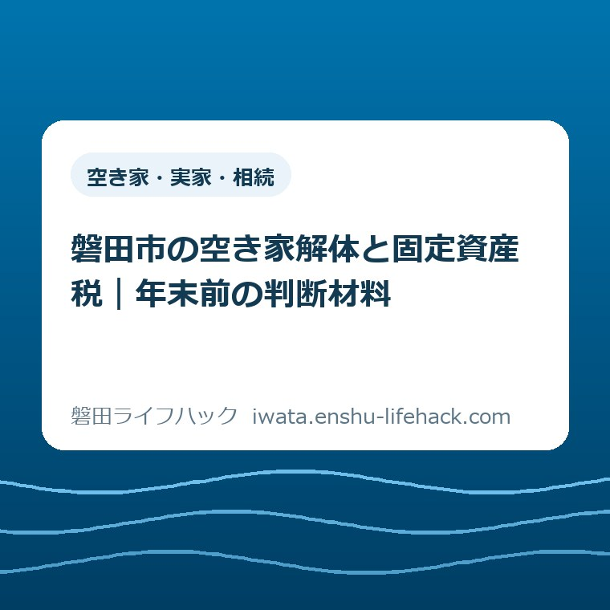
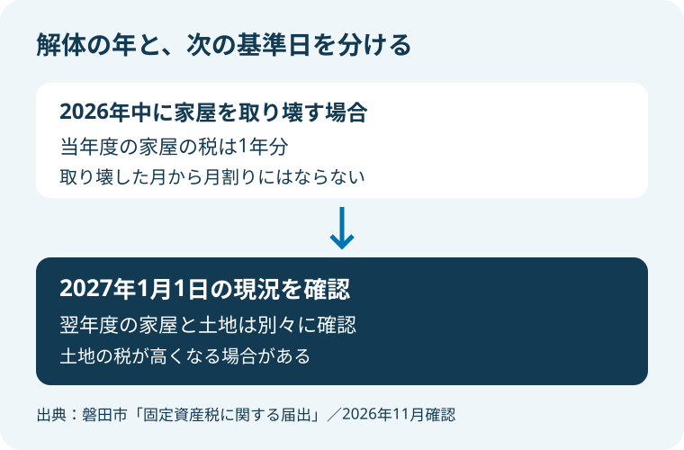
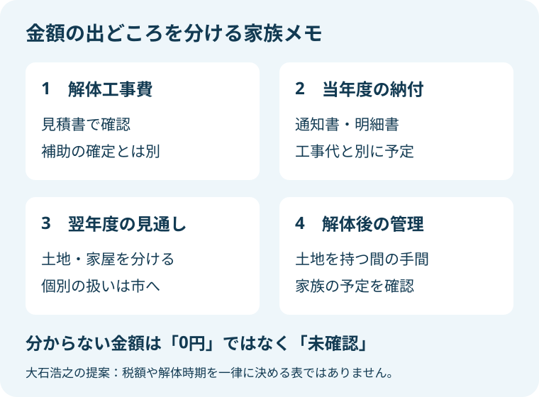

空き家・実家・相続
磐田市の空き家解体と固定資産税｜年末前の判断材料

この記事の要点
Q. 実家を年内に解体すると、固定資産税は安くなる？
A. 解体後の税負担は、土地や建物の個別条件で変わります。家屋の税は年途中の解体でも月割りにならず、土地の税は翌年度に上がる場合があります。2027年1月1日の状況が次の年度の判断材料です。今日は課税明細書を探し、土地と家屋を分けて確かめてください。
管理の手間と解体後の負担を同じ紙に
空き家の解体を考えるご家族は、解体を決める前から手間を払っています。休みの日に磐田市内の実家へ通い、草や落ち葉を片付ける。郵便物を確認し、離れて暮らすきょうだいと予定を合わせる。その負担は、工事の見積書に載る金額だけでは見えません。
「建物がなくなれば管理が楽になる」と考えるのは自然です。一方で、解体費を払った後も土地を持ち続けるなら、その土地の負担は残ります。工事代だけを用意して安心する前に、翌年度の税と、その後の土地の使い方を別の欄に置いておきたいところです。
この記事で考えるのは、空き家を壊すべきかどうかの一律の答えではありません。家族の時間もお金も限られる中で、税の仕組みを読み違えずに判断するための材料です。解体の可否や時期は、建物の安全、家族の事情、土地の条件によって変わります。
私は大石浩之（磐田市／不動産業）です。この記事では、磐田市が公表する税の扱いと、私が家計の段取りとして考えることを分けて書きます。個別の税額をここで計算したり、工事を年内に急ぐよう勧めたりするものではありません。
1月1日が区切る当年度と翌年度
磐田市の「固定資産税に関する届出」は、毎年1月1日の状況で課税すると説明しています。市はこの日を「賦課期日」と呼びます。日常の言葉に置き換えるなら、税を判断するための基準日です。解体工事の支払日や見積書を受け取った日とは別です。
同じ公式ページには、年の途中で家屋を取り壊しても、その年度の税は1年分かかるとあります。所有していた期間に応じた減額はできません。家を使わなくなった月や、建物がなくなった月から、自動的に月割りへ変わる仕組みではないということです。
2026年の途中に実家を取り壊した場合も、当年度分の税が解体月に合わせて減ると見込まないでください。工事費を払う月には、当年度の納税も残り得ます。解体費と当年度の納付を同じ家計の予定に載せると、「家はないのに納付が続く」という戸惑いを減らせます。
これから迎える基準日は2027年1月1日です。年末に近づいたからといって、新しい制度が始まるという話ではありません。毎年ある基準日を前に、工事の予定と税の年度を混同しないための確認です。この記事の確認日は2026年11月3日です。
見積りや契約を済ませたことと、実際に建物が取り壊されたことも分けておきます。市の案内は、取り壊しや1月1日現在の状況を基準にしています。契約日だけを伝えて翌年度の扱いを決めつけず、工事の進み方と現地の状態を市に説明できるようにします。

家屋の税がなくなる話と、土地の税が変わる話
磐田市の「固定資産税・都市計画税の概要」は、固定資産税の対象に土地と家屋を挙げています。実家という一つの呼び方をしていても、税の明細では同じものではありません。まず家屋の欄と土地の欄を別々に見ます。
市の届出案内で特に読み落としたくないのは、居住用の家屋を取り壊した場合の注意です。1月1日に新たな住宅が完成していないと、翌年度から土地の固定資産税が高くなる場合があると説明しています。解体でなくなる建物だけを見ると、この変化が抜け落ちます。
ここで市が使っているのは「高くなる場合があります」という条件付きの説明です。すべての空き家で同じ額が増えるとも、土地と家屋を合わせた負担が必ず増えるとも書いていません。個別の土地に当てはめる前に、この違いを保って読む必要があります。
土地の税が増える可能性と、実家全体の税が増えるかどうかは別の問いです。家屋にかかっていた分と土地の変化を分けなければ、合計の見通しは立ちません。「建物を壊すから安くなる」「更地になるから全部高くなる」のどちらも、そのまま家族の結論にしないことです。
建替えを予定しているご家族も、将来また住むという意向だけで判断しないでください。工事中の場合や土地の利用状況など、公式ページの短い説明だけでは個別の扱いを確定できません。予定する工事と現況を伝え、市に該当する条件を確認する順番になります。
税のしくみ全体を先に見たい場合は、磐田市の固定資産税・都市計画税の案内を入口にできます。本記事では届出様式を網羅するのではなく、解体を決める家族がどの金額を分けて持つかに焦点を絞ります。
課税明細書を、家族の判断材料にする
磐田市の税の概要では、課税明細書は納税通知書に同封されると説明されています。明細には、課税対象の土地と家屋が一筆、一棟ごとに記載されます。通知書の合計額だけでなく、実家に対応する明細を取り出すと、相談する対象をそろえやすくなります。
同じ所有者が別の土地や建物も持っている場合、通知書全体の合計を実家一軒の負担と思い込まないようにします。今回取り壊す家屋と、その敷地がどれかを分けるところからです。判断に迷う欄には印を付け、推測で数字を移さずに残します。
家族で共有する紙は、精密な収支表から始めなくても構いません。私は「工事の費用」「当年度の納付」「翌年度の見通し」「土地を残す間の管理」の四つに分けるのがよいと考えます。金額が分からない欄には、ゼロではなく未確認と書きます。
工事費は解体業者の見積書、税は明細書と市への確認、管理の手間は家族の予定から集めます。出どころが違う数字を一つの説明だけで埋めないためです。税の見通しを、解体工事の見積りに含まれる確定事項のように扱わないことも大切にしたい点です。
解体に伴う補助を調べるときも、受け取れるか未確定の額を先に差し引かないようにします。制度を比べる入口は、木造住宅と危険空き家の解体補助の違いにまとめています。補助の対象確認と、解体後の税の確認は、それぞれ答えを得る必要があります。
市街化区域内の土地や家屋には、都市計画税も課されると市の概要にあります。家族のメモを「固定資産税」の一語で作っている場合も、明細にどの税が含まれるかを見てください。課税の範囲が同じとは限らないため、ここでも一律の合計額は示しません。

市への届出と法務局の手続きを混ぜない
磐田市の届出案内では、基準日までに家屋を取り壊した場合、資産税課への届出が必要です。届出がないと税額などが変わらないことがあるとも記されています。家がなくなったことを、必要な相手に伝える工程まで予定に入れておきます。
登記された物件を取り壊した場合には、市への届出とは別に、法務局で滅失登記に関する手続きを行うよう案内されています。市への税の届出と、登記を整える手続きは同じものではありません。どちらかを済ませた記憶だけで、両方が終わったと扱わないようにします。
市のページには、滅失家屋届出の電子申請と、紙の届出書が用意されています。家族で役割を分けるなら、誰が市への届出を確認し、誰が登記の手続きを確認するかを記しておくと、同じ問い合わせを何度も繰り返す手間を減らせます。
ただし、この記事は個別の登記判断を代わりに行うものではありません。相続した建物の名義や権利関係に不明点があるときは、税の窓口だけですべて解決するとは考えず、法務局や適切な専門家への確認を分けて進めてください。
良い点——基準日と二つの手続きが明記されている
私は、市の届出案内が「年の途中で壊しても月割りにはならない」と明記している点を評価します。日常のサービス料金なら使わない月の支払が止まることもありますが、家屋の税を同じ感覚で考えると、工事後の家計がずれます。短い注意書きでも、この誤解を防ぐ力があります。
土地の税が高くなる場合への注意も、家族が立ち止まれる材料です。解体の利点だけを並べず、建物をなくした後の土地に目を向けられます。私は、これを解体を妨げる説明ではなく、解体後まで家計を見渡すための説明として読みたいと思います。
市への届出と法務局の手続きが別だと示されている点も助かります。離れて暮らす家族が一度にすべてを理解するのは容易ではありません。窓口の役割が分かれた形で見えると、家族の中でも確認先を分担しやすくなります。
注文したい点——合計額を考えるための道筋もほしい
私が公式案内に注文したいのは、建物の税と土地の税をどう分けて質問するかの見本です。「土地の税が高くなる場合」と読んでも、ご家族が知りたいのは実家全体でどの程度の負担になるかです。条件を省いた概算額ではなく、明細書のどこを手元に置くかが見えると助かります。
相談前の人が、税額を計算できるようになる必要はありません。所在地、取り壊す家屋、今後の土地の使い方、予定している時期を、分からないところも含めて伝えられればよい。私は、その入口の言葉が公式案内の近くにあると、電話をかけるまでの迷いが減ると考えます。
これは市の職員の対応を評価した体験談ではありません。公表されたページを読んだ私の意見です。個別条件を確認する仕組みは必要ですし、サイトだけで全世帯の税額を確定させることは求めていません。欲しいのは、確認する材料をそろえる手助けです。
対案・結論——今日は課税明細書を探す
今日の一歩は、実家の課税明細書を探すことに絞ります。解体を決めることでも、見積りを取り直すことでもありません。通知書と一緒に保管されている明細を手元に置き、今回の家屋と土地の欄がどこかを見つけるだけで、次の相談の土台ができます。
確認に進むときは、「実家を取り壊す予定です。今の家屋の税と、取り壊した後の土地の扱いを分けて確認したい」と伝える形が考えられます。明細にある所在地などを参照し、工事予定や今後の用途を説明します。分からない事項は、分からないまま伝えて構いません。
磐田市の公式概要に掲載されている資産税課の電話は0538-37-4809です。窓口は国府台3-1の本庁舎1階と案内されています。連絡や訪問の前には、末尾の市公式ページで最新の窓口案内を確認してください。この記事だけを根拠に受付日や対応の可否を決めないようにします。
家族の考えがそろわない場合は、税だけで話し合いを決着させようとしないことです。空き家を管理する人と費用を負担する人が同じとは限りません。確認した事実と、まだ決めていない希望を分けて持つ方法は、空き家相談会に向けた家族の相談メモも参考になります。
解体後の用途が決まっていないなら、「未定」と書いたまま相談できます。用途を仮に決めて税額だけを出すと、その仮定が家族の決定に見えてしまうことがあります。管理や活用の相談先を探す入口として、磐田市の空き家の案内も用意しています。
大石の視点——税額の一行だけで工事日を決めない
私は、解体の見積書と税の通知書を別々の引き出しに入れたまま判断しないほうがよいと考えます。これは私の判断であり、実際に受けた特定の相談の再現ではありません。工事を終える費用と、その後に土地を持つ負担を一枚で見られる状態を、家族の話し合いの出発点にしたいのです。
私にも、家計の負担を減らすことと、管理の負担を早く終わらせることのどちらを先に置くべきか、一律には決められません。片付けに通う時間、建物の状態、土地を使う予定で答えが変わるからです。税だけを理由に工事を急がせるのも、先送りさせるのも違うと思います。
言い切れるのは、分からない税額をゼロとして家計を組まない、ということです。未確認の欄が一つ見つかれば、その日の確認には意味があります。すべてを一日で決めなくても、家屋と土地を分けて聞けるだけで、家族が同じ前提に立ちやすくなります。
よくある質問
年内に取り壊せば、今年度の固定資産税は戻りますか？
磐田市は、年途中に家屋を取り壊しても、その年度は1年分の税額を課すと案内しています。所有期間に応じた減額はできません。2026年中の解体でも、解体月から月割りになると見込まず、当年度の納付と翌年度の扱いを分けて市に確認してください。
解体すると、固定資産税は必ず高くなりますか？
一律には言えません。市は、居宅を取り壊し、1月1日に新たな住宅が完成していないと、翌年度の土地の税が高くなる場合があると説明しています。家屋と土地を合わせた負担まで必ず増えるという意味ではありません。明細書を用意して個別条件を確認します。
市への届出だけで、建物の登記の手続きも終わりますか？
市の届出と登記の手続きは別です。市は、登記された物件を取り壊した場合、資産税課への届出とは別に法務局で滅失登記に関する手続きを行うよう案内しています。家族で担当を分ける場合も、両方の確認先と進み具合を分けて記録してください。
出典と個別条件の確認先
本文の制度説明は、次の磐田市公式ページを2026年11月3日に確認した内容です。税の基準日、月割りの扱い、取り壊し後の土地への注意は「固定資産税に関する届出」に、明細書と税の対象は「固定資産税・都市計画税の概要」に基づきます。
- 磐田市「固定資産税に関する届出」（2026年5月29日更新）
- 磐田市「固定資産税・都市計画税の概要」（2025年12月12日更新）
税額や適用条件は、土地と家屋の状況などによって変わります。本記事は磐田市の公式案内ではなく、個別の税務・登記判断を行うものではありません。家族の判断に使う前に、最後は磐田市公式ページと資産税課で最新情報を確認し、登記の個別事項は法務局や専門家へ確認してください。